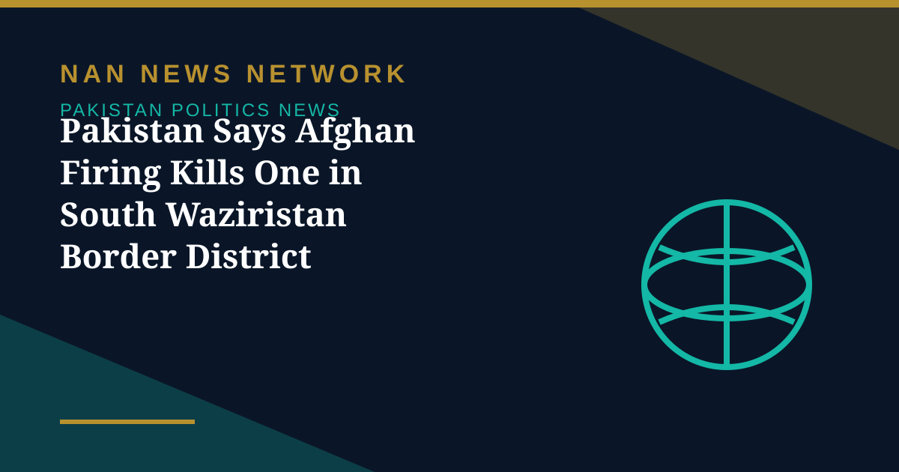

Pakistan Says Afghan Firing Kills One in South Waziristan Border District

One person was killed and five injured after Afghan Taliban fired at civilian houses and a market in Pakistan's Waziristan region near the countries' border, a senior Pakistani administrative official said on Wednesday. Pakistani forces are "responding effectively and heavily" to the "unprovoked" firing on Tuesday, the Deputy Commissioner of South Waziristan Lower said.
Afghan Taliban spokesperson Zabihullah Mujahid did not immediately respond to Reuters' requests for comment on the incident. The violence comes days after the Afghan Taliban said that problems with Pakistan can be resolved through diplomacy, a statement that now sits uneasily beside fresh casualties on the frontier.
Pakistan and Afghanistan have increasingly been at odds over militancy, with Islamabad accusing Kabul of harbouring militants who stage cross-border attacks. The Taliban government denies the charge and says militancy is Pakistan's internal problem. The conflict between the neighbours has killed hundreds of people this year, and each new border incident makes the diplomatic track harder to sustain.
Sources: Reuters, October 28, 2026
More on Pakistan Politics News
- Lahore High Court Judge Mohsin Akhtar Kayani Resigns, Citing Executive Grip on Judiciary
- Pakistan Marks Kashmir Black Day With Rallies Across the Country
- National Assembly Passes Seven Private Members' Bills, Sends Six to Committees
- Pakistan Strongly Condemns Houthi Missile Attacks Near Makkah and Madinah
- Pakistan, Saudi Arabia and Turkiye Reported to Hold Tehran Talks on De-escalation
- Pakistan LPG Shortage Worsens as Iran Border Crossings Close
- Pakistan Ends Machine-Readable Passports and Switches Fully to E-Passports
- Pakistan Calls for a Fairer Global Order at the United Nations